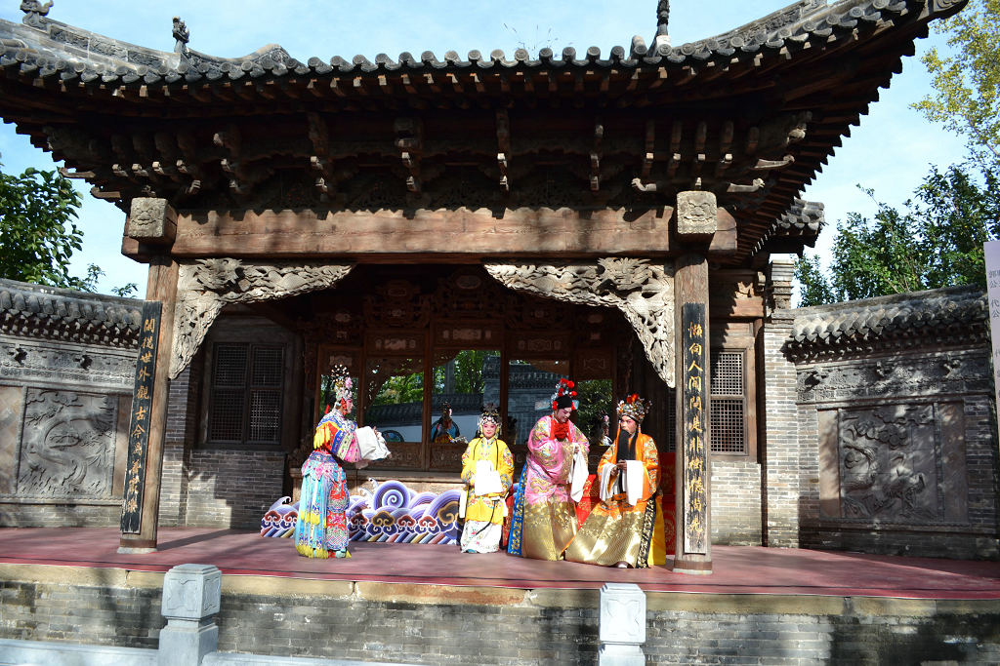
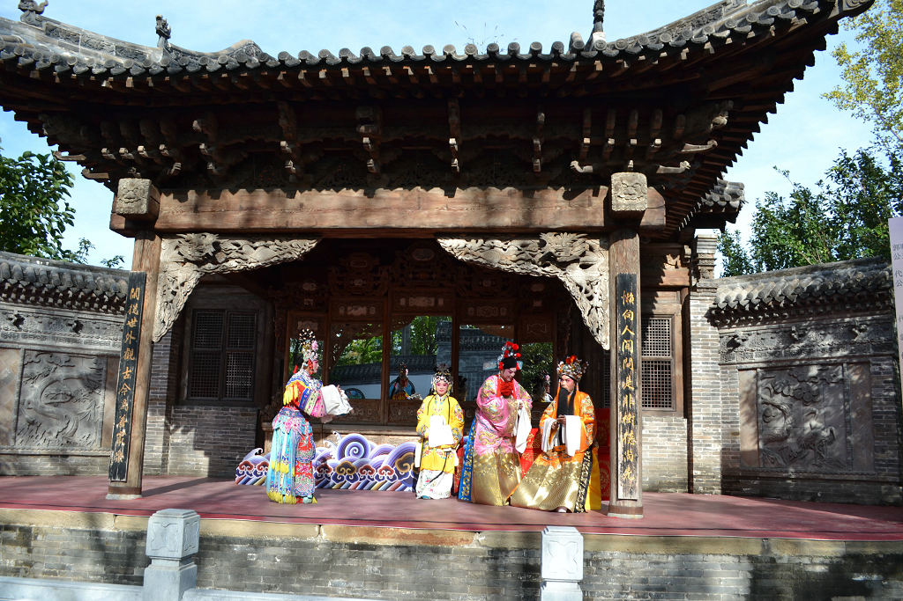
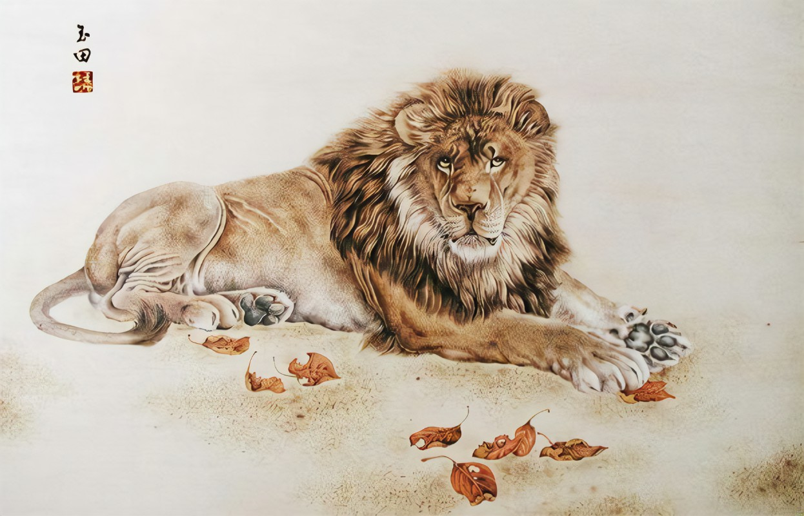
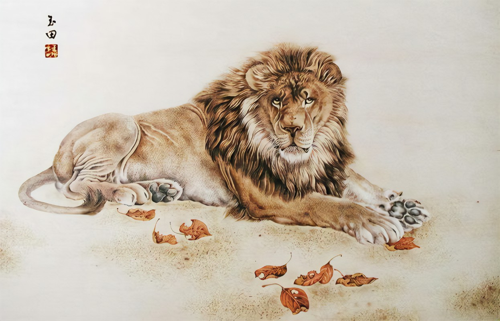

宛梆
 

宛梆，河南省内乡县地方传统戏剧，国家级非物质文化遗产之一。
宛梆是一个稀有的地方戏曲剧种，它生长并流布在河南西南部的南阳及周边广大地区，早期人们称它为唧唧梆、老梆子、南阳梆子等，因南阳古称为“宛”，故1956年南阳行署正式将其命名为“宛梆”。宛梆是明末清初陕西的东路秦腔（同州梆子）传入南阳后，与南阳当地的民歌小调、民间说唱融合后，演变形成的一个戏曲剧种。宛梆主弦为秦腔早期大弦，发音高亢，宛如鸟啼，与枣木梆子搭配，风格独特。宛梆唱腔音乐属板腔体，辅以月琴、三弦、坠胡，以枣本梆击节，并配之以大锣、单皮鼓等打击乐器，给人以粗犷豪迈、激越、奔放的感觉。
2006年5月20日，宛梆经中华人民共和国国务院批准列入第一批国家级非物质文化遗产名录，遗产编号为Ⅳ-24。
打铁花

打铁花，是流传于豫晋地区民间传统的烟火，国家级非物质文化遗产之一。
打铁花是一种大型民间传统焰火，是中国古代匠师们在铸造器皿过程中发现的一种民俗文化表演技艺，始于北宋，盛于明清，至今已有千余年历史。打铁花多流传于黄河中下游，以河南、山西最为流行。开封打铁花更被誉为黄河流域十大民间艺术之首。 打铁花表演时，在一处空旷场地搭出六米高的双层花棚，棚上密布新鲜柳枝，上面绑满烟花鞭炮和起货等。棚中间竖立一根六米高的老杆，使花棚总高度达到十米以上。旁边设一熔炉化铁汁，十余名表演者轮番用花棒将千余度高温的铁汁击打到棚上，形成十几米高的铁花，铁花又点燃烟花鞭炮，再配上“龙穿花”的表演，场景蔚为壮观，呈现出惊险刺激、喜庆热闹的特点。
2008年6月，河南省确山县申报的打铁花经国务院批准列入第二批国家级非物质文化遗产名录，遗产编号Ⅹ-88。
烙画
 

“烙笔熨烫翰墨香，丹青描绘绽芬芳。”烙画亦称烙花、烫画、火笔画，是一种历史悠久的传统工艺美术品，起源于中国历史文化名城河南省南阳市，被誉为“南阳三大宝”之一。
烙画（南阳烙画），起源于秦汉，鼎盛于明清，发展于现代，素以南阳三大宝之首而蜚声海内外。烙画是利用碳化原理，通过控温技巧，以不施任何颜料和以烙为主套色为辅的表现手法，在竹木、宣纸、丝绢等材料上勾划烘烫，把中西绘画艺术和烙画艺术融为一体，形成了古色古香、纯正精美、典雅独特的东方艺术风格。
2021年6月10日，国务院公布南阳烙画为第五批国家级非物质文化遗产，南阳市烙画厂为南阳烙画项目保护单位。